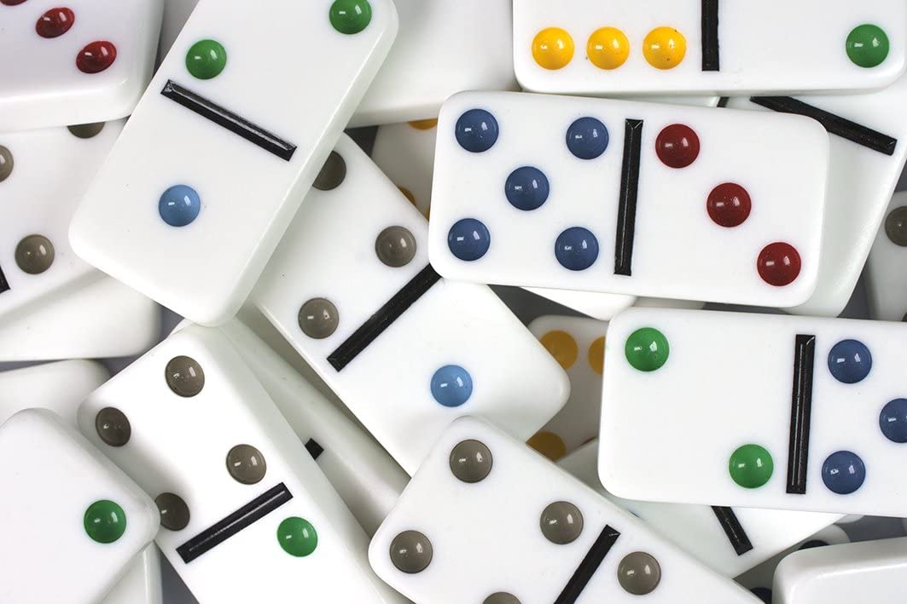

La mejor estrategia del Dominó
Por L. Raúl Iglesias, Miguel Tenorio, Carmen I. Cabrera 7/12/2020
¿Mito o realidad?

El juego de Dominó es uno de los juegos de mesa con mayor arraigo y tradición en Cuba. El
mismo está compuesto por fichas rectangulares que muestran un número (representados por puntos)
por cada uno de sus dos extremos o “cabezas”. Aunque no existe impedimento para que pueda ser
jugado por dos, tres o cuatro personas independientes, es sin dudas el juego entre dos parejas
el que más interesante y competitivo resulta. Se juega de manera oficial en campeonatos a
diferentes niveles, incluido el internacional, pero el dominó callejero, el que se juega en los
portales y las esquinas de los barrios o incluso al interior de la casa, con familiares y amigos,
es el que mayor colorido aporta a este juego, con sus dichos, burlas, griterías y alardes, no
permitidos, evidentemente, en partidos oficiales.
En Cuba se juegan dos tipos de Dominó: uno que llega del blanco (cero) hasta el seis y otro que
llega al nueve.
El primero se juega fundamentalmente en la zona oriental, con un total de 28 fichas, teniendo en
cuenta que las fichas pueden repetir un mismo número por sus dos cabezas (los conocidos “dobles”).
A la hora de jugar, cada jugador debe coger 7 fichas, por lo que no sobra ninguna; en consecuencia
existen 472518347558400 posibles maneras para distribuir las fichas entre los cuatro jugadores.
En la otra variante, que es la usada en la zona occidental y central, el total de fichas llega a 55. Con
el aumento de fichas totales, las posibles formas de distribución de las mismas entre los cuatro jugadores
alcanza un valor de 6019133259325104923266279017000000, cifra increíblemente grande comparada con la anterior
modalidad. En esta versión cada jugador coge diez fichas, por lo que restan 15 que no formarán parte de la
partida y cuyo valor no conoce ningún jugador. Cuando comienza una nueva data las 55 fichas se revuelven y los
jugadores vuelven a seleccionar sus fichas, por lo que las 15 que quedan desconocidas varían regularmente.
La impredictibilidad que aporta este hecho es lo que hace del dominó de 9 un juego único.
"En mi opinión personal, las 15 fichas sobrantes en el juego son las que diferencian y hacen grande de este
tipo de dominó, porque aportan incertidumbre y tensión y fundamentalmente un ingrediente de “suerte” que nos
hace sentir inmensos cuando “contamos la mesa” y “adivinamos” la opción correcta en una jugada decisiva.",
comenta Renier González Mallol, subcampeón de un torneo nacional de la UNAIC, hace casi 20 años.
De una forma u otra, ya sea por experiencia adquirida o las enseñanzas transmitidas de generación en generación,
cada jugador adopta la forma de jugar que cree mejor para garantizar el éxito en cada partida. No faltan aquellos,
que cuando lo consiguen se proclaman "inventores del dominó" o abuchean a los otros por haber perdido. Sin embargo,
surge la duda de cuán eficiente realmente son las estrategias y tácticas popularmente utilizadas; por tanto, en un
intento de clarificar esta cuestión, se desarrollaron numerosos enfrentamientos simulados por computadora que nos
permitieran llegar a conclusiones.
Se cuenta con las siguientes estrategias:
-
Bota Gorda
Bota Gorda
El jugador trata de botar en cada turno, por indeseadas, las fichas más “gordas” (las
que tienen más puntos). Es una estrategia simple, que no requiere de mucho análisis del
desarrollo del partido por parte del jugador.
-
Bota Flaca
Bota Flaca
El jugador, contrario a la estrategia de Bota Gorda, intenta siempre jugar
la ficha más "flaca" (la que menos puntos acumula).
-
Más frecuente
Más Frecuente
El jugador intenta siempre tener alguna ficha para jugar en su turno,
por lo que siempre juega alguna de las fichas con mayor frecuencia en su mano.
-
Agachao
Agachao
El jugador que se "agacha" a una ficha, es porque es la que única que tiene
un número específico y está tratando de no quedarse sin ella; solamente jugará
esta ficha si es la única jugada válida para ese turno.
-
Aleatorio
Aleatorio
El jugador escoge de forma aleatoria alguna de las fichas válidas a jugar en
ese turno.
-
Repetidor
Repetidor
El jugador trata de que el siguiente siempre reciba los mismos números para
decidir su jugada; esto aumenta las probabilidades de que el siguiente jugador
se quede sin fichas de estos números y se vea obligado a perder su turno.
-
Contador de la mesa
Contador de la mesa
El jugador cuenta la cantidad de veces que ha aparecido un número en la mesa y
trata siempre de jugar aquel con mayor frecuencia.
-
Menos Jugada
Menos Jugada
El jugador trata de "fresquear" la mesa, o sea, cuenta la mesa y decide poner
la ficha que con menor frecuencia se ha utilizado en el juego.
-
Pasador
Pasador
El objetivo de este jugador es tratar de que el siguiente se pase (no tenga
ninguna ficha que jugar en su turno), por lo que siempre trata de dejar en las
cabezas algunas que ya sepa que el siguiente no tiene.
-
No gastar la data
No gastar la data
El jugador trata de guardar su data (mayor subconjunto de las fichas que
recibe el jugador al inicio del juego que tienen un número en común) para
el final del juego.
-
Gastar la data
Gastar la data
El jugador intenta siempre hacer un movimiento tal que su data quede en las
cabezas del juego.
-
Siempre doble
Siempre doble
Este jugador siempre que tiene la oportunidad de jugarlo, pone un doble (fichas
que tienen el mismo número por los dos extremos).
-
Campeón del doble 6
Campeón del doble 6
Jugador inteligente que combina varias estrategias para obtener mejores resultados
en la modalidad de dominó hasta el 6. Podrá leer más acerca de este jugador en la
metodología.
-
Campeón del doble 9
Campeón del doble 9
Jugador inteligente que combina varias estrategias para obtener mejores resultados
en la modalidad de dominó hasta el 9. Podrá leer más acerca de este jugador en la
metodología.
Las partidas pueden desarrollarse en ambas variantes de juego (6x6 y 9x9). Igualmente se puede seleccionar la
regla que determine el ganador de una partida, la cual puede tener, en dependencia de dicha regla, más de una
data:
-
Un juego
Un juego
El ganador de la data es el ganador de la partida.
-
Dos de Tres
Dos de Tres
El ganador de la partida es el primero en ganar dos datas.
-
Partida a ganar 100
Partida a ganar 100
El ganador de la partida es aquel que alcance primero los 100 puntos. Los puntos se acumulan
sumando los valores de las fichas que tenía la pareja contraria cuando la pareja gana una data.
-
Primera doble
Primera doble
La partida termina cuando alguna de las parejas obtiene 100 puntos, pero la primera data se cuenta
doble.
-
Capicúa doble
Capicúa doble
Se conoce como capicúa cuando una pareja gana el juego porque uno de los jugadores se pega, y podía
poner
su última ficha por cualquiera de las dos cabezas, en este caso los puntos obtenidos en esta data se
cuentan doble. Igualmente
la partida finaliza cuando alguna de las parejas alcance los 100 puntos.
Independientemente de la estrategia que desarrolle una pareja, el salidor puede elegir su ficha de salida
de formas diferentes; algunas maneras son:
-
Aleatorio
Aleatorio
No hace ninguna elección especial, deja la decisión de la salida en manos de la estrategia
seleccionada.
-
Mejor acompañada
Mejor acompa-
ñada
Determina el mayor subconjunto de fichas que tienen el mismo número en común, y entre esas fichas
elige
la que será la salida, dando prioridad a los dobles.
-
Más alta
Más alta
Como su nombre indica, toma como salida la ficha más alta. Note que siempre que tenga el doble 9 la
utilizará como salida.
-
Más alta mejor acompañada
Más alta mejor acompa-
ñada
Busca entre los números más altos (de 6 en adelante) los que están mejor acompañados, y de ese
conjunto
selecciona la salida, dando prioridad a los dobles.
-
Salida a la falla
Salida a la falla
La "falla" es una ficha que contiene un número, tal que ese número no aparece en ninguna otra ficha.
Busca entre las fichas alguna que sea falla y decide salir con ella. Este comportamiento también se
aplica a la primera jugada de los integrantes de la otra pareja, si tienen varias opciones para matar
la salida deciden jugar con la falla.
Por último, los jugadores de una pareja juegan con la misma estrategia, pero además pueden tener un
comportamiento cooperativo, es decir, siempre uno de ellos juega para la mano de los dos. La mano en un juego,
es el jugador que menos fichas tiene, lo cual se puede aplicar también en la misma pareja; este jugador es en
principio, el que tiene la ventaja para ser el primero en quedarse sin fichas.
En el siguiente gráfico usted podrá elegir el tipo de dominó que desee, el tipo de juego, la forma de salida,
si se juega en modo cooperativo o no, y la estrategia que utilizará la pareja; y este mostrará el resultado
(% de victorias) de enfrentar a dicha pareja contra otra a la que se le asignará en cada caso una de las estrategias
implementadas.
Simulaciones
Salida de Casino vs Bota Gorda
La "salida de casino" hace referencia a la salida con el doble blanco (doble cero). Esta es considerada
por muchos como una mala táctica, teniendo en cuenta que es la ficha más baja de todo el juego, y aseguran
que el jugador que la usa tiene la derrota asegurada. Sin embargo, los partidarios de emplear esta técnica
generalmente cuentan con una data de blancos, y se arriesgan a jugar de esta forma pensando en apretar al
contrario con la misma. ¿Mito o realidad?
Para determinar la respuesta a esta interrogante se hicieron simulaciones con el juego de 9x9. El
jugador que inicia el juego cuenta con una data de blancos de al menos cinco fichas, entre las que se encuentra
el doble blanco, para poder realizar la salida. La pareja juega con la estrategia de gastar la data y en modo
cooperativo. Los resultados de este jugador se compararán con los de un jugador bota-gorda cooperativo.
| Estrategias |
Casino |
Bota Gorda |
| Bota Gorda |
52.2 % |
28.4 % |
| Más Frecuente |
53.2 % |
24.0 % |
| Aleatorio |
50.0 % |
30.0 % |
| Campeón del doble 6 |
48.2 % |
27.8 % |
| Repetidor |
46.0 % |
26.8 % |
| Contador de la mesa |
46.4 % |
28.2 % |
| Pasador |
43.0 % |
26.4 % |
| Menos Jugada |
48.8 % |
23.6 % |
| No gastar la data |
50.8 % |
28.4 % |
| Bota Flaca |
41.2 % |
24.6 % |
| Agachao |
46.4 % |
25.8 % |
| Gastar la data |
49.0 % |
24.2 % |
| Siempre doble |
46.2 % |
33.0 % |
| Campeón del doble 9 |
45.2 % |
24.4 % |
Notoriamente la salida de casino es una mejor opción que ignorar tu data de blancos y jugar a botar la más
gorda. Que la salida de casino es una mala idea es ... un mito.
¿Jugar con o en contra del enemigo?
Cuando sucede que un jugador obtiene una buena data, inmediatamente arma su estrategia en torno a ella y asume
que probablemente vaya a ganar el juego si la aprovecha de forma correcta. Pero de repente el contrario, que es
el salidor, comparte la misma data, y ya no es tan sencillo definir qué hacer: muchos optan por jugar tratando
siempre de matar la jugada de su oponente, sacrificando su data, y apoyando a su compañero, que lo más probable
es que no tenga fichas con ese número; pero hay otros que deciden probar fuerza, y juegan aprovechando la data
del contrario con la suya, incluso aunque eso signifique que su compañero deba sufrir las consecuencias. Son
generalmente esos compañeros los que, cuando no es exitosa la estrategia, acusan a su pareja como culpable del
resultado y aseguran que jugando de esa forma no llegarán a ningún lado; bajo ninguna circunstancia se juega con
el contrario. ¿Mito o realidad?
Para realizar las simulaciones en este caso, se arregla que un jugador y alguno de sus oponentes compartan la
misma data y acumulen entre ellos al menos 8 fichas con el mismo número en común. En ambos casos las dos parejas
juegan en modo cooperativo. Nos interesa saber los resultados para la pareja que no es salidora, en un caso
se le definió como estrategia gastar la data y en el otro no hacerlo; ambas variantes se enfrentaron al resto de
las estrategias implementadas, obteniendo los siguientes resultados:
| Estrategias |
Gastar la data |
No gastar la data |
| Bota Gorda |
43.0 % |
38.4 % |
| Más Frecuente |
51.0 % |
46.2 % |
| Aleatorio |
51.6 % |
46.4 % |
| Campeón del doble 6 |
44.6 % |
48.6 % |
| Repetidor |
49.0 % |
49.4 % |
| Contador de la mesa |
46.0 % |
48.0 % |
| Pasador |
52.6 % |
47.6 % |
| Menos Jugada |
54.4 % |
47.6 % |
| No gastar la data |
48.6 % |
53.2 % |
| Bota Flaca |
58.6 % |
59.6 % |
| Agachao |
52.0 % |
49.6 % |
| Gastar la data |
51.8 % |
47.4 % |
| Siempre doble |
53.4 % |
52.4 % |
| Campeón del doble 9 |
57.8 % |
54.0 % |
Se puede observar que con ambas estrategias se obtienen resultados muy similares, aunque el que juega con el
contrario es ligeramente superior en casi todos los casos. En consecuencia, no es necesario frustrarse si el
resultado de una data no es el esperado, pues que esta estrategia sea una mala táctica es ... solo un mito.
Compartir buena data con la pareja, ¿sinónimo de victoria segura?
Se puede pensar que una partida en la que se tenga una buena data se puede jugar
de forma cómoda y optimista. Si entre las fichas de un jugador y su pareja, está
la mayoría de uno de los números, entonces las expectativas son aún mejores debido
a que esta pareja no tendrá muchos obstáculos para dominar buena parte de la partida.
El sentido común podría indicar lo mismo que piensan muchos jugadores experimentados
de Dominó: una partida así se gana casi al seguro. ¿Mito o realidad?
Simulaciones con el juego de 9x9 fueron las usadas, como ha sido usual, en la búsqueda de la
respuesta. Los jugadores de una pareja comparten al menos 8 fichas de una data, juegan con la
estrategia de gastar la data, y en modo cooperativo.
| Estrategias |
Gastar la data |
| Bota Gorda |
62.6 % |
| Más Frecuente |
53.2 % |
| Aleatorio |
57.4 % |
| Campeón del doble 6 |
54.8 % |
| Repetidor |
56.8 % |
| Contador de la mesa |
53.4 % |
| Pasador |
54.0 % |
| Menos Jugada |
59.2 % |
| No gastar la data |
56.2 % |
| Bota Flaca |
49.2 % |
| Agachao |
55.2 % |
| Gastar la data |
54.0 % |
| Siempre doble |
59.8 % |
| Campeón del doble 9 |
54.4 % |
Los resultados indican que esta situación no es garantía de victoria, a pesar de que sea más
probable ganar que perder. Al parecer una buena forma de enfrentar a una pareja en una posición
tan ventajosa como esta, es repetirle fichas y tratar de pasarlos. Que compartir una buena data
con la pareja sea victoria segura es ... un mito.
¡Data de dobles! Ya perdí
En ocasiones ocurre que el jugador obtiene un montón de dobles en su mano inicial (5 o más), y esto hace
muy difícil para él jugar, dado que las opciones que le permiten poner estas fichas disminuyen. En general, se
considera que si algo así sucede, a menos que la suerte esté de su lado (o el de su compañero), la victoria del
otro equipo es segura. Incluso se han visto jugadores, que definen como regla para jugar, que por lo injusto de
esta
situación, se pueden volver a repartir las fichas. ¿Será tan catastrófica como parece?
Para llevar a cabo estas simulaciones, se fijó un jugador al cual se le reparten inicialmente al menos 5 dobles;
este
jugador y su pareja juegan de modo cooperativo con la estrategia de siempre que se pueda jugar algún doble, se
juegue.
| Estrategias |
Siempre doble |
| Bota Gorda |
52.4 % |
| Más Frecuente |
53.6 % |
| Aleatorio |
52.4 % |
| Campeón del doble 6 |
57.0 % |
| Repetidor |
45.6 % |
| Contador de la mesa |
50.8 % |
| Pasador |
48.8 % |
| Menos Jugada |
50.2 % |
| No gastar la data |
49.0 % |
| Bota Flaca |
43.8 % |
| Agachao |
44.0 % |
| Gastar la data |
46.0 % |
| Siempre doble |
47.8 % |
| Campeón del doble 9 |
44.4 % |
Como se puede observar, se puede llevar a cabo un juego con estas características y aún así ganar la partida,
siendo
esto algo no poco común: en todos los casos los datos rondan la mitad de juegos ganados y la otra mitad,
perdidos. Así
que no es necesario dejarse influenciar por esta idea, y aquel que intente repartir las fichas nuevamente,
bueno, pues
aclararle que es solo un mito.
Doblarse al final: ¿Jugada de novatos o de valientes?
No es raro escuchar en una mesa de Dominó: ¡¡¡Al final uno no se dobla!!!, si, esta es una de las expresiones
más comunes
que ocurren cuando un jugador pierde y su pareja se dobla en las últimas etapas del juego. En el
Dominó, tal cual
como se juega en Cuba, se reprochan bastante los jugadores de una pareja entre sí. Pero ese no es el tema que
abordado en este instante.
Se dice mucho que un jugador debe evitar doblarse al final del juego (cuando un jugador esté cerca de pegarse
porque le quedan pocas fichas, o
porque queden pocas fichas por jugar entre todos los jugadores). Entre las razones de esta técnica, está tratar
de poner fichas que dejen a la pareja
en una situación favorable, cosa que no es muy difícil de hacer debido a que se puede contar la mesa, detectar
que números son los más repetidos y más
frescos, a la vez que se conoce cuáles son los números a los que cada jugador se ha pasado. Poner un doble
implica dejar el estado de la mesa invariante,
y cualquier jugada al final del juego es crucial. Sin embargo, doblarse podría ser una jugada bien pensada como
cualquier otra. ¿Mito o realidad?
Para salir de la duda, se realizaron simulaciones de partidas de 100 puntos con dos jugadores que utilizan las
estrategias y tácticas del Campeón del doble 9,
jugando para la mano siempre que puede. La única diferencia que tienen es que uno evitará siempre de doblarse al
final del juego.
| Estrategias |
No doblarse al final |
Doblarse sin restricción |
| Bota Gorda |
61.8 % |
61.4 % |
| Más Frecuente |
67.8 % |
66.4 % |
| Aleatorio |
65.0 % |
60.4 % |
| Campeón del doble 6 |
47.2 % |
51.4 % |
| Repetidor |
64.8 % |
61.4 % |
| Contador de la mesa |
59.2 % |
61.8 % |
| Pasador |
61.4 % |
58.4 % |
| Menos Jugada |
60.8 % |
60.6 % |
| No gastar la data |
62.2 % |
56.8 % |
| Bota Flaca |
45.4 % |
50.4 % |
| Agachao |
58.8 % |
58.6 % |
| Gastar la data |
58.4 % |
57.0 % |
| Siempre doble |
46.8 % |
52.4 % |
| Campeón del doble 9 |
47.0 % |
52.4 % |
El lector puede notar que no doblarse al final o si hacerlo, no marca una diferencia notable en el juego.
Doblarse al final no tiene el sello del fracaso, por tanto
se puede afirmar que es otro mito más.
Salir con el doble 9: ¿No se piensa?
Muchos jugadores ven al doble 9 como una ficha molesta, que se debe soltar en la primera oportunidad, y tiene
sus razones para
serlo, ya que es la ficha que más puntos contiene. Una jugada muy aceptada es salir con el doble 9 cuando se
está en posesión de la ficha
a la hora de la salida, a pesar de que no se tenga una data de 9. Se puede ver como un reflejo incondicionado,
de todas formas los contrarios
no saben en ese momento si se tiene una data de 9 o si es una jugada clásica para deshacerse de esa ficha. Salir
con el doble 9 sin pensarlo es cómodo
a veces debido a que no se pierde tiempo discutiendo con la pareja para coordinar a quien de los dos le va
a corresponder la salida. Sin embargo no faltan
los jugadores expertos que dicen que siempre se debe salir con la data más alta mejor acompañada, con el
objetivo de empezar fuerte y que la pareja sepa como
puede ayudar mejor a la mano; aunque los hay también que prefieren salir a la falla. Para ellos, no se debe
tomar la salida desde un enfoque arbitrario como es salir
con el doble 9 sin tomar en cuenta el resto de las fichas. ¿Qué será mejor?
Esta vez se realizaron simulaciones de partidas únicas, debido a que uno de los jugadores de la pareja a la que
le correspondería la salida, tendría el doble 9
siempre, cosa que no es real, aunque no imposible, en cada partida de un juego de 100 puntos. Los jugadores
utilizados para la comparación fueron campeones del doble 9,
jugando para la mano siempre que puede, donde uno siempre sale con el doble nueve, y otro sale con la data mejor
acompañada (MA).
| Estrategias |
Salida doble 9 |
Salida MA |
| Bota Gorda |
62.0 % |
65.4 % |
| Más Frecuente |
60.4 % |
63.2 % |
| Aleatorio |
56.2 % |
60.8 % |
| Campeón del doble 6 |
57.8 % |
60.2 % |
| Repetidor |
53.2 % |
60.0 % |
| Contador de la mesa |
52.0 % |
54.6 % |
| Pasador |
55.6 % |
57.4 % |
| Menos Jugada |
56.8 % |
56.6 % |
| No gastar la data |
55.6 % |
60.2 % |
| Bota Flaca |
50.0 % |
49.6 % |
| Agachao |
56.0 % |
58.6 % |
| Gastar la data |
55.4 % |
60.2 % |
| Siempre doble |
52.8 % |
58.2 % |
| Campeón del doble 9 |
53.0 % |
49.2 % |
Tal vez no resulta muy evidente, pero los mejores resultados se alcanzaron de forma general con la salida con la
data mejor acompañada.
La expresión inicial podría cambiarse por: Salir con el doble 9 con buena data de 9: ¡No se piensa!. Usted
escoja lo que estime conveniente cuando
vaya a salir y tenga el doble 9, pero tenga en mente que salir con esa ficha no es una regla.